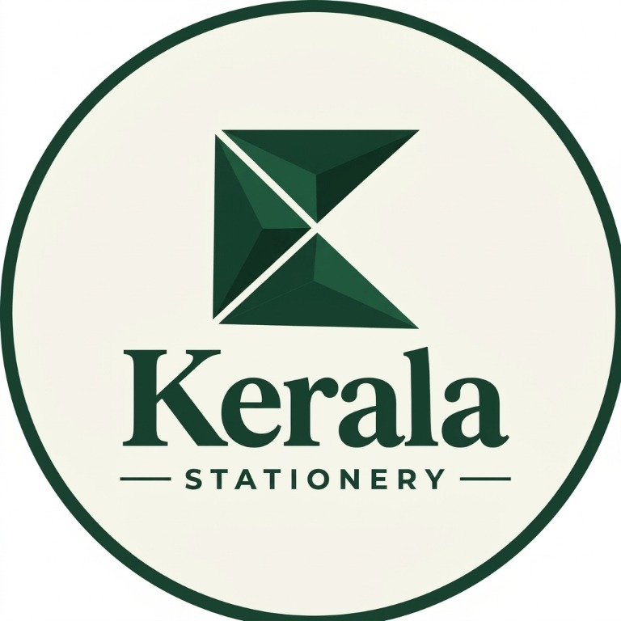
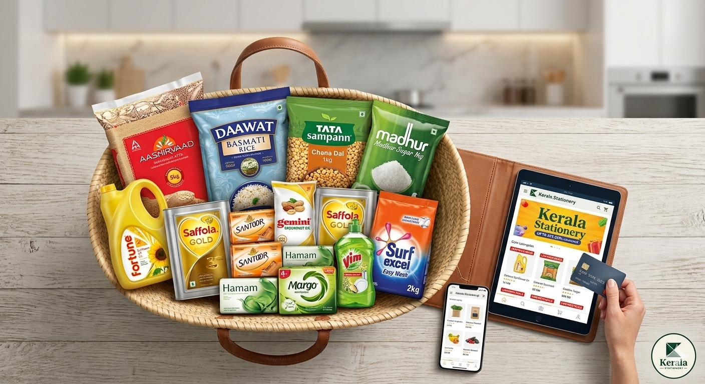
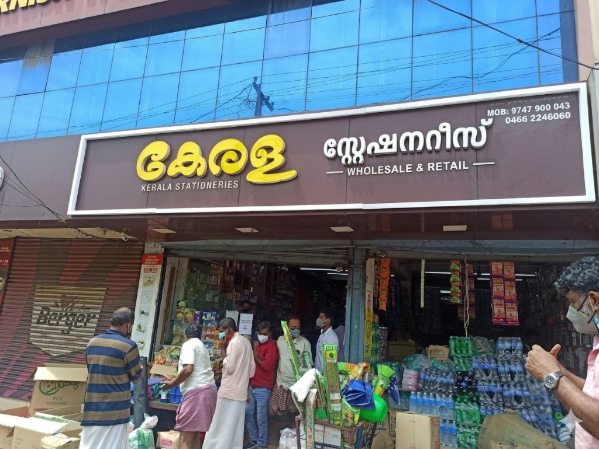

Rice & grains
Everyday rice and pantry staples for retail shelves.

WHOLESALE & RETAIL Explore rangeYOUR EVERYDAY WHOLESALE PARTNER
A broad supply range for retailers, grocery shops, and business buyers. From rice, oils, spices, and home care to books and stationery.

A WELL-STOCKED MIX
Explore the core ranges we supply to local retailers and business buyers. Visit the shop to see the full selection.
Everyday rice and pantry staples for retail shelves.
Cooking oil essentials for homes and food businesses.
Aromatic ingredients and traditional spice staples.
Everyday curry powders and masala blends.
Bathing soaps, washing soaps, detergent powders, and liquids.
Books, notebooks, writing supplies, and stationery essentials.
BUILT AROUND THE NEEDS OF TRADE
02 — WHOLESALEWhether you stock a neighbourhood grocery, run a retail business, or buy supplies for your workplace, find a wide mix of everyday essentials at Kerala Stationary and Plastics.

OUR STORE · WHOLESALE + RETAILA LOCAL STORE WITH A BROAD RANGE
Kerala Stationary and Plastics brings groceries, household supplies, books, and stationery together in one local wholesale and retail shop.
Stop by to explore the range and find the everyday goods that suit your store or business.
Find out about the shopKERALA STATIONARY AND PLASTICS
Groceries, oils, spices, household care, books, and stationery for local trade.
View our product range